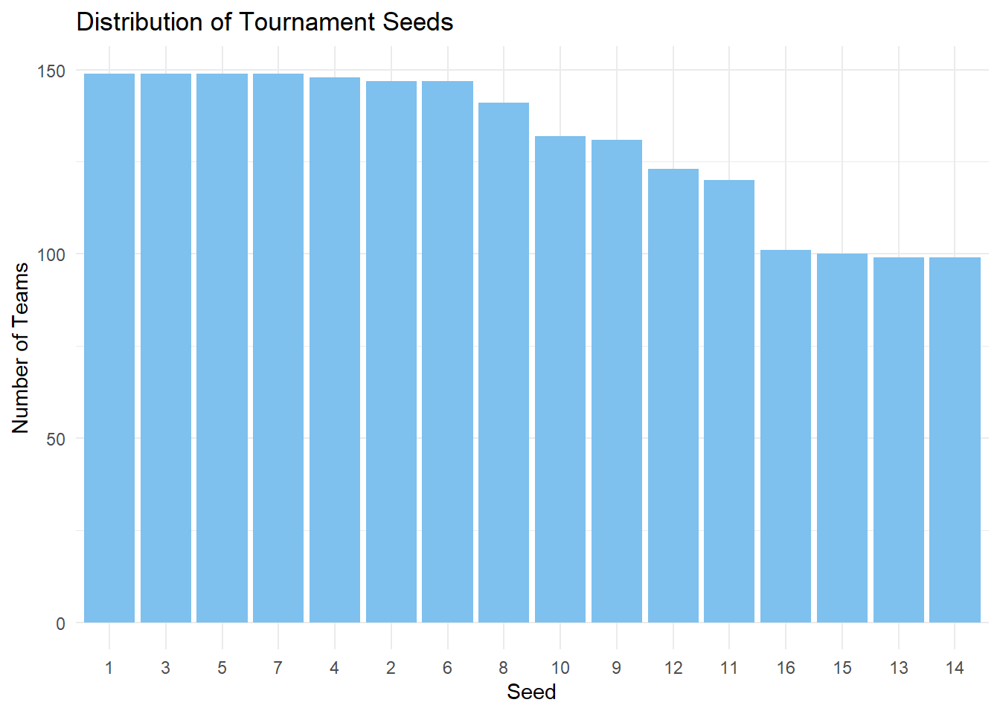
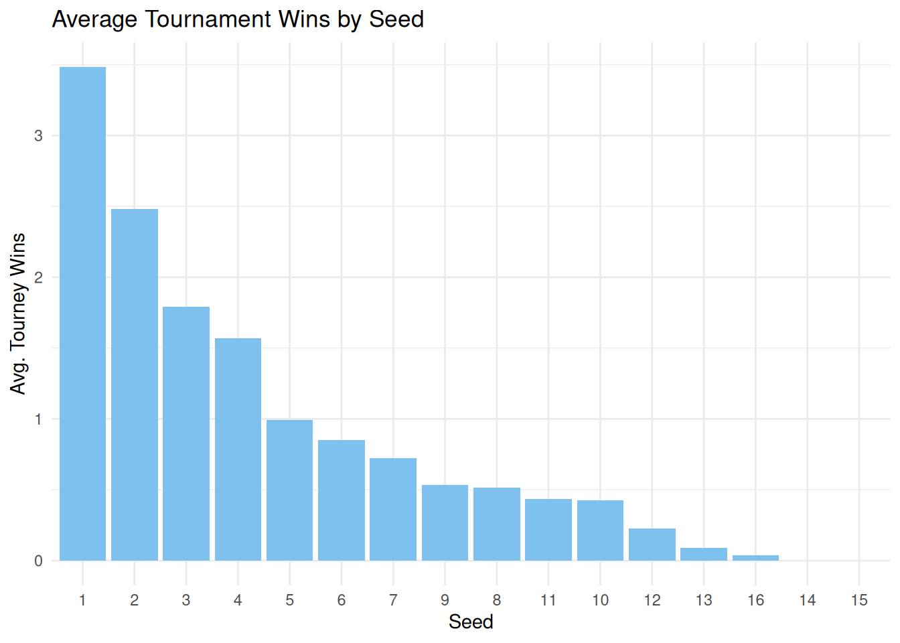
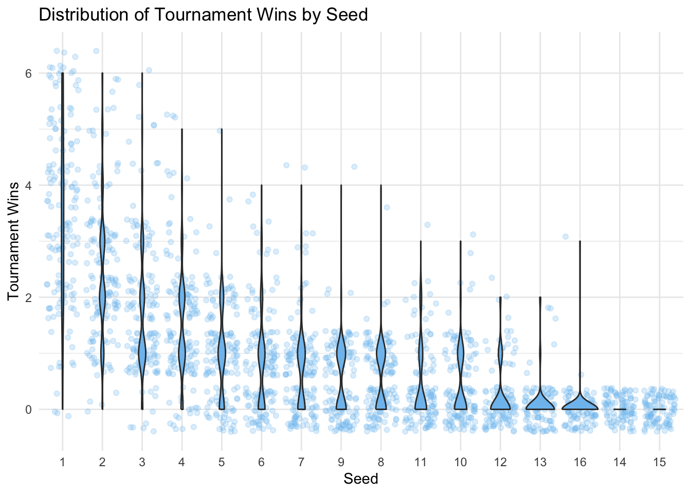
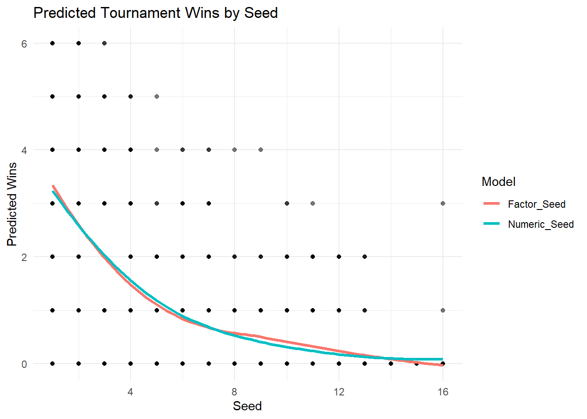
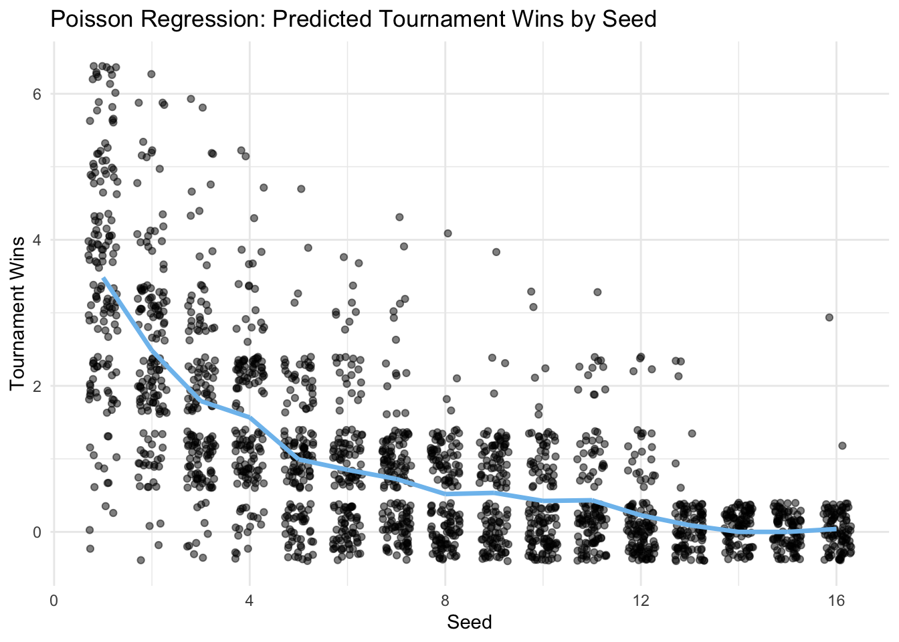

library(diversedata)
library(tidyverse)
library(AER)
library(broom)
library(knitr)
library(MASS)Women’s March Madness
About the Data
This adapted dataset contains historical records of every NCAA Division I Women’s Basketball Tournament appearance since the tournament began in 1982 up until 2018, capturing tournament results across more than four decades of collegiate women’s basketball. All data is sourced from the NCAA and contains the data behind the story The Rise and Fall Of Women’s NCAA Tournament Dynasties.
The rise in popularity of the NCAA Women’s March Madness, fueled by athletes like Caitlin Clark and Paige Bueckers, reflects a broader cultural shift in the recognition of women’s sports. Beyond entertainment and athletic achievement, women’s participation in sport has social and professional benefits.
As Beth A. Brooke notes in her article Here’s Why Women Who Play Sports Are More Successful, research from EY shows that 94% of women in executive leadership roles played sports, and over half competed at the university level. Participation in sports helps develop skills such as resilience, teamwork, and competitiveness, traits that are critical for career success.
Analyzing NCAA Women’s March Madness results and promoting visibility of women in sports supports advocacy for equity, opportunity, and empowerment of women in leadership.
Download
Metadata
CSV Name
womensmarchmadness.csv
Dataset Characteristics
Multivariate
Subject Area
Women In Sports
Associated Tasks
Regression, Classification
Feature Type
Factor, Integer, Numeric
Instances
2092
Features
20
Has Missing Values?
Yes
Variables
| Variable Name | Role | Type | Description | Units | Missing Values |
|---|---|---|---|---|---|
| year | Feature | integer | Year | - | No |
| school | Feature | nominal categorical | School | - | No |
| seed | Feature | ordinal categorical | Seed. The 0 seeding designation in 1983 notes the eight teams that played an opening-round game to become the No. 8 seed in each region. | - | No |
| conference | Feature | nominal categorical | Conference | - | No |
| conf_wins | Feature | numeric | Conference Wins | - | Yes |
| conf_losses | Feature | numeric | Conference Losses | - | Yes |
| conf_wins_pct | Feature | numeric | Conference Win Percentage | - | Yes |
| conf_rank | Feature | numeric | Place in Conference | - | Yes |
| division | Feature | nominal categorical | Conference Division | - | Yes |
| reg_wins | Feature | integer | Regional Wins | - | No |
| reg_losses | Feature | integer | Regional Losses | - | No |
| reg_wins_pct | Feature | numeric | Regional Win Percentage | % | No |
| bid | Feature | nominal categorical | Whether the school qualified with an automatic bid (by winning its conference or conference tournament) or an at-large bid. [‘at-large’, ‘auto’] | - | No |
| first_game_at_home | Feature | nominal categorical | Whether the school played its first-round tournament games on its home court. [‘Y’, ‘N’] | - | No |
| tourney_wins | Feature | integer | Tourney Wins | - | No |
| tourney_losses | Feature | integer | Tourney Losses | - | No |
| tourney_finish | Target | ordinal categorical | Ordered categories: [‘opening_round_loss’ < ‘first_round_loss’ < ‘second_round_loss’ < ‘top_16_loss’ < ‘top_8_loss’ < ‘top_4_loss’ < ‘top_2_loss’ < ‘champ’] | - | No |
| total_wins | Feature | integer | Total Wins | - | No |
| total_losses | Feature | integer | Total Losses | - | No |
| total_wins_pct | Feature | numeric | Total Win Percentage | % | No |
Key Features of the Dataset
Each row represents a single team’s appearance in a specific tournament year and includes information such as:
Tournament Seed (
seed) – Seed assigned to the team.Tournament Results (
tourney_wins,tourney_losses,tourney_finish) – Number of wins, losses, and how far the team advanced.Bid Type (
bid) – Whether the team received an automatic bid or was selected at-large.Season Records (
reg_wins,reg_losses,reg_wins_pct,conf_wins,conf_losses,conf_wins_pct,total_wins,total_losses,total_wins_pct) – Regular season, conference, and total win/loss stats and percentages.Conference Information (
conference,conf_wins,conf_losses,conf_wins_pct,conf_rank) – Team’s conference name, record, and rank within the conference.Division (
division) – Regional placement in the tournament bracket (e.g., East, West).Home Game Indication (
first_game_at_home) – Whether the team played its first game at home.
Purpose and Use Cases
This dataset is designed to support analysis of:
Team performance over time
Impact of seeding and bid types on tournament results
Conference strength
Emergence and decline of winning teams in women’s college basketball
Case Study
Objective
How much does a team’s tournament seed predict its success in the NCAA Division I Women’s Basketball Tournament?
This analysis explores the relationship between a team’s seed and its results on a tournament to evaluate whether teams with lower seeds consistently outperform ones with higher seeds.
By examining historical data, we aim to identify trends in tournament advancement by seed level
Seeding is intended to reflect a team’s regular-season performance. In theory, lower-numbered seeds (e.g., #1, #2) are given to the strongest teams, who should be more likely to advance. But upsets, bracket surprises, and standout performances from lower seeds raise questions like “How reliable is seeding as a predictor of success?”
Understanding these dynamics can inform fan expectations and bracket predictions.
Analysis
We should load the necessary libraries we will be using, including the diversedata package.
import diversedata as dd
import pandas as pd
import statsmodels.api as sm
import statsmodels.formula.api as smf
import altair as alt
import numpy as np
from scipy import stats
from IPython.display import Markdown1. Data Cleaning & Processing
First, let’s load our data (womensmarchmadness from diversedata package) and remove all NA values for our variables of interest seed and tourney_wins.
# Reading Data
marchmadness <- womensmarchmadness
# Review total rows
nrow(marchmadness)[1] 2092# Removing NA but only in selected columns
marchmadness <- marchmadness |> drop_na(seed, tourney_wins)
# Notice no rows were removed
nrow(marchmadness)[1] 2092# Reading Data
marchmadness = dd.load_data("womensmarchmadness")
# Review total rows
marchmadness.shape[0]2092# Removing NA but only in selected columns
marchmadness = marchmadness.dropna(subset=['seed', 'tourney_wins'])
# Notice no rows were removed
marchmadness.shape[0]2092Note that, the seed = 0 designation in 1983 notes the eight teams that played an opening-round game to become the No.8 seed in each region. For this exercise, we will not take them into consideration. Since seed is an ordinal categorical variable, we can set it as an ordered factor.
marchmadness <- marchmadness |>
filter(seed != 0)marchmadness = marchmadness[marchmadness['seed'] != 0]2. Exploratory Data Analysis
We can see which seeds appear more often.
seed_count <- marchmadness |>
count(seed) |>
arrange(desc(n)) |>
mutate(seed = factor(seed, levels = seed))
ggplot(
seed_count,
aes(x = seed, y = n)
) +
geom_col(fill = "skyblue2") +
labs(
title = "Distribution of Tournament Seeds",
x = "Seed",
y = "Number of Teams") +
theme_minimal()
alt.Chart(marchmadness).mark_bar().encode(
x=alt.X("seed:O").title("Seed").axis(alt.Axis(labelAngle=0)),
y=alt.Y("count()", title="Number of Teams"),
).properties(title="Distribution of Tournament Seeds", width=600)We can also take a look at the average tournament wins for each seed:
marchmadness |>
filter(!is.na(seed), seed != 0) |>
group_by(seed) |>
summarise(
avg_tourney_wins = mean(tourney_wins, na.rm = TRUE)
) |>
arrange(desc(avg_tourney_wins)) |>
mutate(seed = factor(seed, levels = seed)) |>
ggplot(
aes(
x = as.factor(seed),
y = avg_tourney_wins)
) +
geom_col(fill = "skyblue2") +
labs(
title = "Average Tournament Wins by Seed",
x = "Seed",
y = "Avg. Tourney Wins"
) +
theme_minimal()
avg_per_seed = marchmadness.groupby(by="seed")["tourney_wins"].mean().reset_index()
alt.Chart(avg_per_seed).mark_bar().encode(
x=alt.X("seed:O").title("Seed").axis(alt.Axis(labelAngle=0)),
y=alt.Y("tourney_wins").title("Avg. Tourney Wins"),
).properties(title="Average Tournament Wins by Seed", width=600)We can see that teams with a lower seed tend to win more tournaments! We can also see the total amount of tourney wins for each seed.
seed_order <- marchmadness |>
filter(!is.na(seed), seed != 0) |>
group_by(seed) |>
summarise(avg_wins = mean(tourney_wins, na.rm = TRUE)) |>
arrange(desc(avg_wins)) |>
pull(seed)
marchmadness |>
filter(!is.na(seed), seed != 0) |>
mutate(seed = factor(seed, levels = seed_order)) |>
ggplot(
aes(x = seed, y = tourney_wins)
) +
geom_jitter(alpha = 0.25, color = "skyblue2") +
geom_violin(fill = "skyblue2") +
labs(
title = "Distribution of Tournament Wins by Seed",
x = "Seed",
y = "Tournament Wins"
) +
theme_minimal()
alt.Chart(marchmadness).transform_density(
"tourney_wins", as_=["tourney_wins", "density"], groupby=["seed"]
).mark_area(orient="horizontal").encode(
x=alt.X("density:Q")
.stack("center")
.impute(None)
.title(None)
.axis(labels=False, values=[0], grid=False, ticks=True),
y=alt.Y("tourney_wins").title("Tournament Wins"),
column=alt.Column("seed:O")
.spacing(0)
.header(titleOrient="bottom", labelOrient="bottom", labelPadding=0)
.title("Seed"),
).configure_view(
stroke=None
).properties(
width=70,
title="Distribution of Tournament Wins by Seed"
)3. Seed Treatment: Numeric vs Factor
An important decision in this analysis is whether to use seed as a numeric or an ordered categorical predictor. Treating seed as a numeric explanatory variable assumes that the effect of seed is linear on the log scaled amount of tourney_wins.
To test if this assumption is appropriate, we can compare models that make different assumptions about seed. We’ll create models using seed as both a numeric variable and a factor.
First, we need to encode seed as an ordered factor.
marchmadness_factor <- marchmadness |>
mutate(seed = as.ordered(seed)) |>
mutate(seed = fct_relevel
(seed,
c("1", "2", "3", "4", "5",
"6", "7", "8", "9", "10",
"11", "12", "13", "14", "15",
"16")))marchmadness_factor = marchmadness.copy()
marchmadness_factor["seed"] = pd.Categorical(
marchmadness["seed"], categories=range(1, 17), ordered=True
)Given that we’re setting tourney_wins as a response, our linear regression model may output negative values at high seed values. Therefore, a Poisson Regression model is better suited, considering that tourney wins is a count variable and is always non-negative.
options(contrasts = c("contr.treatment", "contr.sdif"))
poisson_model <- glm(tourney_wins ~ seed, family = "poisson", data = marchmadness)
poisson_model_factor <- glm(tourney_wins ~ seed, family = "poisson", data = marchmadness_factor)
Note
At the moment, the statsmodels Python package does not support successive contrasts.
In this Python analysis, seed 1 will be used as the reference seed. To change the reference seed, such as seed 2:
poisson_model_factor = smf.glm( "tourney_wins ~ C(seed, Treatment(reference=2))", # specify reference seed number here data=marchmadness_factor, family=sm.families.Poisson() ).fit()
poisson_model = smf.glm(
"tourney_wins ~ seed", data=marchmadness, family=sm.families.Poisson()
).fit()
poisson_model_factor = smf.glm(
"tourney_wins ~ seed", data=marchmadness_factor, family=sm.families.Poisson()
).fit()We can visualize how the two models fit the data to evaluate if treating seed as numeric or factor would have a significant impact on our modelling process.
marchmadness <- marchmadness |>
mutate(
Numeric_Seed = predict(poisson_model, type = "response"),
Factor_Seed = predict(poisson_model_factor, type = "response")
)
plot_data <- marchmadness |>
dplyr::select(seed, tourney_wins, Numeric_Seed, Factor_Seed) |>
pivot_longer(cols = c("Numeric_Seed","Factor_Seed"), names_to = "model", values_to = "predicted")
ggplot(plot_data, aes(x = seed, y = predicted, color = model)) +
geom_point(aes(y = tourney_wins), alpha = 0.3, color = "black") +
geom_line(stat = "smooth", method = "loess", se = FALSE, linewidth = 1.2) +
labs(title = "Predicted Tournament Wins by Seed",
x = "Seed",
y = "Predicted Wins",
color = "Model") +
theme_minimal()
marchmadness["Numeric_Seed"] = poisson_model.predict()
marchmadness["Factor_Seed"] = poisson_model_factor.predict()
plot_data = pd.melt(
marchmadness,
id_vars=["seed", "tourney_wins"],
value_vars=["Numeric_Seed", "Factor_Seed"],
var_name="model",
value_name="predicted",
)
points = alt.Chart(plot_data).mark_circle(opacity=0.3, color="black").encode(
x=alt.X("seed").title("Seed"),
y=alt.Y("tourney_wins:Q").title("Predicted Wins")
)
lines = alt.Chart(plot_data).mark_line(size=2).encode(
x=alt.X("seed"),
y="predicted:Q",
color=alt.Color("model:N")
.title("Model")
.scale(alt.Scale(domain=["Factor_Seed", "Numeric_Seed"],
range=["salmon", "darkturquoise"]
)
)
).transform_loess(on="seed", loess="predicted", groupby=["model"])
(points + lines).properties(title='Predicted Tournament Wins by Seed', height=400, width=600)Visually, the models don’t appear to be significantly different from each other. If we wanted to formally evaluate which is the better approach we could use likelihood-based model selection tools.
kable(glance(poisson_model), digits = 2)| null.deviance | df.null | logLik | AIC | BIC | deviance | df.residual | nobs |
|---|---|---|---|---|---|---|---|
| 3438.76 | 2083 | -2117.42 | 4238.84 | 4250.12 | 1610.34 | 2082 | 2084 |
kable(glance(poisson_model_factor), digits = 2)| null.deviance | df.null | logLik | AIC | BIC | deviance | df.residual | nobs |
|---|---|---|---|---|---|---|---|
| 3438.76 | 2083 | -2079.52 | 4191.04 | 4281.31 | 1534.54 | 2068 | 2084 |
summary_poisson_model_dict = {
'null.deviance' : poisson_model.null_deviance,
'df.null' : poisson_model.nobs - 1,
'logLik': poisson_model.llf,
'AIC': poisson_model.aic,
'BIC': poisson_model.bic,
'deviance': poisson_model.deviance,
'df.residual': poisson_model.df_resid,
'nobs': poisson_model.nobs
}
summary_poisson_model_df = pd.DataFrame([summary_poisson_model_dict]).round(2)
Markdown(summary_poisson_model_df.to_markdown(index = False))| null.deviance | df.null | logLik | AIC | BIC | deviance | df.residual | nobs |
|---|---|---|---|---|---|---|---|
| 3438.76 | 2083 | -2117.42 | 4238.84 | -14300.4 | 1610.34 | 2082 | 2084 |
summary_poisson_model_factor_dict = {
'null.deviance' : poisson_model_factor.null_deviance,
'df.null' : poisson_model_factor.nobs - 1,
'logLik': poisson_model_factor.llf,
'AIC': poisson_model_factor.aic,
'BIC': poisson_model_factor.bic,
'deviance': poisson_model_factor.deviance,
'df.residual': poisson_model_factor.df_resid,
'nobs': poisson_model_factor.nobs
}
summary_poisson_model_factor_df = pd.DataFrame([summary_poisson_model_factor_dict]).round(2)
Markdown(summary_poisson_model_factor_df.to_markdown(index = False))| null.deviance | df.null | logLik | AIC | BIC | deviance | df.residual | nobs |
|---|---|---|---|---|---|---|---|
| 3438.76 | 2083 | -2079.52 | 4191.04 | -14269.2 | 1534.54 | 2068 | 2084 |
Based on lower residual deviance, higher log-likelihood, and a lower AIC, the model that treats seed as a factor fits the data better. This would suggest that the relationship between tournament seed and number of wins is not linear, and would support using an approach that does not assume a constant effect per unit change in seed.
However, before deciding on using a more complex model, we can evaluate if this complexity offers a significantly better modeling approach. To do this, we can perform a likelihood ratio test.
\(H_0\): Model poisson_model fits the data better than model poisson_model_factor
\(H_a\): Model poisson_model_factor fits the data better than model poisson_model
anova_result <- tidy(anova(poisson_model, poisson_model_factor, test = "Chisq"))
kable(anova_result, digits = 2) | term | df.residual | residual.deviance | df | deviance | p.value |
|---|---|---|---|---|---|
| tourney_wins ~ seed | 2082 | 1610.34 | NA | NA | NA |
| tourney_wins ~ seed | 2068 | 1534.54 | 14 | 75.79 | 0 |
# manual chi sq test for GLMs:
# deviance
deviance = 2 * (poisson_model_factor.llf - poisson_model.llf)
df_diff = poisson_model_factor.df_model - poisson_model.df_model
p_value = stats.chi2.sf(deviance, df_diff)
# results
anova_result = pd.DataFrame({
"model comparison": ["poisson_model vs poisson_model_factor"],
"deviance": [deviance],
"df": [df_diff],
"p-value": [p_value]
}).round(2)
Markdown(anova_result.to_markdown(index = False))| model comparison | deviance | df | p-value |
|---|---|---|---|
| poisson_model vs poisson_model_factor | 75.79 | 14 | 0 |
These results indicate strong evidence that the model with seed treated as a factor fits the data significantly better than treating it as a numeric predictor. Therefore, we will proceed with using seed as a factor.
4. Overdispersion Testing
It is noteworthy that Poisson assumes that the mean is equal to the variance of the count variable. If the variance is much greater, we might need a Negative Binomial model. We can do a dispersion test to evaluate this matter.
Letting \(Y_i\) be the \(ith\) Poisson response in the count regression model, in the presence of equidispersion, \(Y_i\) has the following parameters:
\(E(Y_i)=\lambda_i, Var(Y_i)=\lambda_i\)
The test uses the following mathematical expression (using a \(1+\gamma\) dispersion factor):
\(Var(Y_i)=(1+\gamma)\times\lambda_i\)
with the hypotheses:
\(H_0:1 + \gamma = 1\)
\(H_a: 1 + \gamma > 1\)
When there is evidence of overdispersion in our data, we will reject \(H_0\).
kable(tidy(dispersiontest(poisson_model_factor)), digits = 2)| estimate | statistic | p.value | method | alternative |
|---|---|---|---|---|
| 0.96 | -0.56 | 0.71 | Overdispersion test | greater |
Note
At the moment, the statsmodels Python package does not have a built-in hypothesis test for dispersion in count models. However, a manual Pearson chi-square test can be performed to assess whether overdispersion or underdispersion is present in the data.
Note that R’s dispersiontest() function from the AER package uses a score test, which is more statistically rigorous but also more complex to implement in Python.
pearson_chi2 = np.sum(poisson_model_factor.resid_pearson**2)
df_resid = poisson_model_factor.df_resid
dispersion = pearson_chi2 / df_resid
p_value = 1 - stats.chi2.cdf(pearson_chi2, df_resid)
dispersion_result = pd.DataFrame({
"statistic": [pearson_chi2],
"df": [df_resid],
"dispersion": [dispersion],
"p-value": [p_value]
}).round(2)
Markdown(dispersion_result.to_markdown(index = False))| statistic | df | dispersion | p-value |
|---|---|---|---|
| 1795.44 | 2068 | 0.87 | 1 |
A dispersion of ~1.0 indicates that the dispersion matches the Poisson assumption, in which the variance of the data is equal the mean.
A dispersion of >1.0 indicates overdispersion, in which the variance is greater than the mean.
A dispersion of <1.0 indicates underdispersion, in which the variance is less than the mean.
Since the p-value is much greater than 0.05, we fail to reject the null hypothesis. This suggests that there is not significant evidence of overdispersion in the Poisson model.
5. Hypothesis Testing: Are Seed and Wins Associated?
summary_model <- tidy(poisson_model_factor) |>
mutate(exp_estimate = exp(estimate)) |>
mutate_if(is.numeric, round, 3) |>
filter(p.value <= 0.05)
kable(summary_model, digits = 2)| term | estimate | std.error | statistic | p.value | exp_estimate |
|---|---|---|---|---|---|
| seed2-1 | -0.34 | 0.07 | -4.96 | 0.00 | 0.71 |
| seed3-2 | -0.33 | 0.08 | -4.05 | 0.00 | 0.72 |
| seed5-4 | -0.46 | 0.10 | -4.34 | 0.00 | 0.63 |
| seed8-7 | -0.34 | 0.15 | -2.22 | 0.03 | 0.71 |
| seed12-11 | -0.64 | 0.23 | -2.75 | 0.01 | 0.52 |
| seed13-12 | -0.92 | 0.38 | -2.40 | 0.02 | 0.40 |
Note
As mentioned before, the statsmodels Python package does not support successive contrasts at the moment.
In this Python analysis, seed 1 is be used as the reference seed by default.
To obtain successive differences , you can compute them manually by subtracting the corresponding coefficients. For example, the difference between seed 3 and seed 2 is \(-0.66 - (-0.34) = -0.32\).
You can change the reference seed (such as seed 2) when fitting the model, which would allow you to assess whether other seeds differ significantly from the new reference seed:
poisson_model_factor = smf.glm( "tourney_wins ~ C(seed, Treatment(reference=2))", # specify reference seed number here data=marchmadness_factor, family=sm.families.Poisson() ).fit()
poisson_model_factor_summary = poisson_model_factor.summary2().tables[1]
poisson_model_factor_summary['Exp Coef.'] = np.exp(poisson_model_factor_summary['Coef.'])
poisson_model_factor_summary = poisson_model_factor_summary.rename(columns={'P>|z|' : 'p.value'}).round(2)
Markdown(poisson_model_factor_summary.to_markdown())| Coef. | Std.Err. | z | p.value | [0.025 | 0.975] | Exp Coef. | |
|---|---|---|---|---|---|---|---|
| Intercept | 1.25 | 0.04 | 28.43 | 0 | 1.16 | 1.33 | 3.48 |
| seed[T.2] | -0.34 | 0.07 | -4.96 | 0 | -0.47 | -0.2 | 0.71 |
| seed[T.3] | -0.66 | 0.08 | -8.83 | 0 | -0.81 | -0.52 | 0.51 |
| seed[T.4] | -0.8 | 0.08 | -10.11 | 0 | -0.95 | -0.64 | 0.45 |
| seed[T.5] | -1.25 | 0.09 | -13.46 | 0 | -1.44 | -1.07 | 0.29 |
| seed[T.6] | -1.41 | 0.1 | -14.15 | 0 | -1.61 | -1.21 | 0.24 |
| seed[T.7] | -1.57 | 0.11 | -14.84 | 0 | -1.78 | -1.36 | 0.21 |
| seed[T.8] | -1.91 | 0.13 | -15.25 | 0 | -2.15 | -1.66 | 0.15 |
| seed[T.9] | -1.87 | 0.13 | -14.72 | 0 | -2.12 | -1.63 | 0.15 |
| seed[T.10] | -2.11 | 0.14 | -14.97 | 0 | -2.38 | -1.83 | 0.12 |
| seed[T.11] | -2.08 | 0.15 | -14.33 | 0 | -2.37 | -1.8 | 0.12 |
| seed[T.12] | -2.73 | 0.19 | -14.06 | 0 | -3.11 | -2.35 | 0.07 |
| seed[T.13] | -3.65 | 0.34 | -10.84 | 0 | -4.3 | -2.99 | 0.03 |
| seed[T.14] | -26.95 | 23290 | -0 | 1 | -45674.4 | 45620.5 | 0 |
| seed[T.15] | -26.95 | 23173.2 | -0 | 1 | -45445.6 | 45391.7 | 0 |
| seed[T.16] | -4.48 | 0.5 | -8.92 | 0 | -5.46 | -3.49 | 0.01 |
Based on these results, we can see that seed is significantly associated with tourney_wins, particularly in changes in levels between lower seeds. These results can be interpreted as:
Seed 2 teams are expected to win 29% (1-0.71) fewer games than Seed 1 teams.
Seed 3 teams are expected to win 28% fewer games than Seed 2 teams.
Seed 5 teams are expected to win 37% fewer games than Seed 4 teams.
Seed 8 teams are expected to win 29% fewer games than Seed 7 teams.
Seed 12 teams are expected to win 48% fewer games than Seed 11 teams.
Seed 13 teams are expected to win 60% fewer games than Seed 12 teams.
This conclusion is easier to interpret visually, so, let’s plot our Poisson regression model to view the impact of seed on tourney_wins:
marchmadness$predicted_wins <- predict(poisson_model_factor, type = "response")
model_plot <- ggplot(marchmadness, aes(x = seed, y = tourney_wins)) +
geom_jitter(width = 0.3, alpha = 0.5) +
geom_line(aes(y = predicted_wins), color = "skyblue2", linewidth = 1.2) +
labs(title = "Poisson Regression: Predicted Tournament Wins by Seed",
x = "Seed",
y = "Tournament Wins") +
theme_minimal()
model_plot
marchmadness["predicted_wins"] = poisson_model_factor.predict()
result_plot_data = (
marchmadness
.groupby(['seed', 'predicted_wins', 'tourney_wins'])
.size()
.reset_index(name='count')
)
# Plot
bubbles = alt.Chart(result_plot_data).mark_circle(opacity=0.6).encode(
x=alt.X("seed:N").title("Seed").axis(alt.Axis(labelAngle=0, labelPadding=10)),
y=alt.Y("tourney_wins:Q").title("Tournament Wins").axis(alt.Axis(format='d')),
size=alt.Size("count:Q").title("Count").scale(alt.Scale(range=[10, 1000])),
color=alt.value("black")
)
line = alt.Chart(result_plot_data).mark_line(size=3, color="skyblue").encode(
x=alt.X("seed:N").axis(alt.Axis(labelAngle=0, labelPadding=10)),
y=alt.Y("predicted_wins:Q").axis(alt.Axis(format='d')),
)
(bubbles + line).properties(
title="Poisson Regression: Predicted Tournament Wins by Seed",
width=600,
height=400
)Discussion
This analysis examined the relationship between a team’s tournament seed and its performance in the NCAA Division 1 Women’s Basketball Tournament. The results suggest that:
Poisson regression supports seeding as a predictor: The Poisson regression model indicates that seed is a significant predictor of tournament wins, suggesting that lower-seeded teams tend to win more, even between closely ranked seeds.
Proper variable coding is essential: Treating seed as a numeric variable would assume a linear relationship on the log scale of expected tournament wins, meaning each one-unit increase in seed (e.g., from 1 to 2, or 10 to 11) would be associated with the same proportional decrease in wins. This oversimplifies the real pattern. By encoding seed as an ordered factor, the model can estimate distinct effects for each seed level, allowing for more accurate and nuanced interpretation.
There is a lot of variation around the prediction: While seeding generally reflects team strength, upsets and unexpected performances do occur, showing that other factors also influence tournament outcomes.
Seeding is an important predictor of success, but clearly other factors influence the results. Unexpected performances are common in March Madness, so investigating additional variables could provide a fuller picture of what drives tournament outcomes.
Attribution
Data sourced from FiveThirtyEight’s NCAA Women’s Basketball Tournament dataset, available under a Creative Commons Attribution 4.0 International License. Original dataset: FiveThirtyEight GitHub Repository. Story: Louisiana Tech Was the UConn of the ’80s.
Brooke-Marciniak, B. A. (2016, February 7). Here’s why women who play sports are more successful. LinkedIn article.